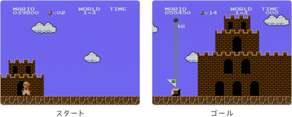
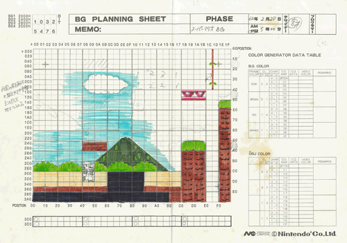

### 「スーパーマリオ２５周年」

<DIV ID="volbox-5"><P CLASS="volnum1"><A CLASS="btn-volnum1" TITLE="社長の代わりに糸井重里さんが訊く" HREF="../vol1/index.html">社長の代わりに糸井重里さんが訊く
<P CLASS="volnum2"><A CLASS="btn-volnum2" TITLE="ファミコンとマリオ 篇" HREF="../vol2/index.html">ファミコンとマリオ 篇
<P CLASS="volnum3"><A CLASS="btn-volnum3" TITLE="『スーパーマリオ』シリーズ開発経験者 篇 その１" HREF="../vol3/index.html">『スーパーマリオ』シリーズ開発経験者 篇 その１
<P CLASS="volnum4"><A CLASS="btn-volnum4" TITLE="『スーパーマリオ』シリーズ開発経験者 篇 その２" HREF="../vol4/index.html">『スーパーマリオ』シリーズ開発経験者 篇 その２
<P CLASS="volnum5"><A CLASS="btn-volnum5s" TITLE="『スーパーマリオ』生みの親たち 篇" HREF="../vol5/index.html">『スーパーマリオ』生みの親たち 篇

<DIV ID="main-visual">
<H2>
<DIV ID="pagebox-wrap">
<DIV CLASS="pagebox">
<P CLASS="pagenum"><A HREF="index.html">1. 十字ボタンを押してジャンプ
<P CLASS="pagenum"><A HREF="index2.html">2. 入社１年目の新人も
<P CLASS="pagenum"><A HREF="index3.html">3. “集大成”のソフトに
<P CLASS="pagenums"><A>4. ２人でいっしょにコースデザイン
<P CLASS="pagenum"><A HREF="index5.html">5. “メモリ減らし”のために
<P CLASS="pagenum"><A HREF="index6.html">6. “スーパーマリオ保存会”
<P CLASS="pagenum"><A HREF="index7.html">7. 京都文化のように

<DIV>

<DIV ID="int-box-wrap">
<H3>
<DIV CLASS="int-box"><DIV CLASS="int-name"><P>手塚
<DIV CLASS="int-text"><P>買い物番組の話じゃないんですけど、<br>やっぱり制限があることは大事だなあと、僕は思うんです。<br>最近入ってきた人たちは、そのような制限を感じることが少なくて・・・。
<DIV CLASS="clear"><DIV CLASS="int-box"><DIV CLASS="int-name"><P>岩田
<DIV CLASS="int-text"><P>いまのこの時代、「３０バイトで何かしろ」と言われても、<br>何をすることもできないんですよね。<br>でも昔は「ブロック１０個置けたよ」と（笑）。
<DIV CLASS="clear"><DIV CLASS="int-box"><DIV CLASS="int-name"><P>宮本
<DIV CLASS="int-text"><P>なんか面白がっていましたよね、そういうことを。<br>しかも悲壮感がなかったんですよ。
<DIV CLASS="clear"><DIV CLASS="int-box"><DIV CLASS="int-name"><P>手塚
<DIV CLASS="int-text"><P>ええ。
<DIV CLASS="clear"><DIV CLASS="int-box"><DIV CLASS="int-name"><P>岩田
<DIV CLASS="int-text"><P>絵描きとして入った手塚さんも<br>その制約のなかでやるのが面白かったんですか？
<DIV CLASS="clear"><DIV CLASS="int-box"><DIV CLASS="int-name"><P>手塚
<DIV CLASS="int-text"><P>すごく面白かったです。<br>そもそも僕は会社に入って間もないですから、<br>設計自体をいっしょになってやるというよりは、<br>どれだけの制約があるかを聞いて、<br>その範囲内でつくる仕事が本当に楽しかったんです。
<DIV CLASS="clear"><DIV CLASS="img-photo">
<DIV CLASS="int-box"><DIV CLASS="int-name"><P>岩田
<DIV CLASS="int-text"><P>実はわたしも楽しかったんです。<br>あの当時、「メモリが足らなくて困ってる」と相談されると、<br>正直な話、すごくうれしくて（笑）。<br>当時は、同じ機能のプログラムを<br>いかに少ないメモリ容量で実現するかというのは<br>プログラマーの腕の見せどころのひとつだったんですから。
<DIV CLASS="clear"><DIV CLASS="int-box"><DIV CLASS="int-name"><P>宮本
<DIV CLASS="int-text"><P>「岩田さんに任せていれば、なんとかしてくれる」って（笑）。
<DIV CLASS="clear"><DIV CLASS="int-box"><DIV CLASS="int-name"><P>岩田
<DIV CLASS="int-text"><P>なんか、そういうことを楽しみながらつくってましたね。
<DIV CLASS="clear"><DIV CLASS="int-box"><DIV CLASS="int-name"><P>中郷
<DIV CLASS="int-text"><P>（資料をめくりながら）<br>・・・たとえばここに描かれたお城もそうですね。
<DIV CLASS="clear"><DIV CLASS="int-box"><DIV CLASS="int-name"><P>中郷
<DIV CLASS="int-text"><P>スタートのところのお城はちっちゃくて、<br>ゴールのお城は大きいんですけど、実は同じお城なんです。
<DIV CLASS="clear"><DIV CLASS="img-photo-500px">
<DIV CLASS="int-box"><DIV CLASS="int-name"><P>手塚
<DIV CLASS="int-text"><P>ゴールの大きなお城の上の部分だけを<br>スタート地点に持ってきてるんです。
<DIV CLASS="clear"><DIV CLASS="int-box"><DIV CLASS="int-name"><P>中郷
<DIV CLASS="int-text"><P>だから、ゴール地点のお城をよーく見ると、<br>実は上の階にも出入り口があったりするんですけど、<br>「これは窓や」と言い張ったり（笑）。
<DIV CLASS="clear"><DIV CLASS="int-box"><DIV CLASS="int-name"><P>岩田
<DIV CLASS="int-text"><P>あははは（笑）。
<DIV CLASS="clear"><DIV CLASS="int-box"><DIV CLASS="int-name"><P>中郷
<DIV CLASS="int-text"><P>『スーパーマリオ』の当時は<br>そういうことばっかり考えてつくっていました。
<DIV CLASS="clear"><DIV CLASS="int-box"><DIV CLASS="int-name"><P>岩田
<DIV CLASS="int-text"><P>だから、どうしたら少ないデータで、<br>より豪華に見えるようにするかとか・・・。
<DIV CLASS="clear"><DIV CLASS="int-box"><DIV CLASS="int-name"><P>中郷
<DIV CLASS="int-text"><P>少ないデータで、どうすれば<br>たくさんの表現ができるかという、<br>こういうことに力を注いでいたんですね。
<DIV CLASS="clear"><DIV CLASS="int-box"><DIV CLASS="int-name"><P>岩田
<DIV CLASS="int-text"><P>そのように“集大成”のソフトにするために、<br>いろいろと工夫しながら『スーパーマリオ』をつくりはじめて、<br>このソフトがとんでもないものに変わっていくタイミングは、<br>どこで訪れたと、中郷さんは感じましたか？
<DIV CLASS="clear"><DIV CLASS="int-box"><DIV CLASS="int-name"><P>中郷
<DIV CLASS="int-text"><P>それは間違いなく、背景が出たときです。
<DIV CLASS="clear"><DIV CLASS="int-box"><DIV CLASS="int-name"><P>岩田
<DIV CLASS="int-text"><P>黒い背景ではない、青空が出たときですね。
<DIV CLASS="clear"><DIV CLASS="int-box"><DIV CLASS="int-name"><P>中郷
<DIV CLASS="int-text"><P>はい。
<DIV CLASS="clear"><DIV CLASS="int-box"><DIV CLASS="int-name"><P>宮本
<DIV CLASS="int-text"><P>（１枚のプランニングシートを取り出し）<br>・・・これですね。
<DIV CLASS="clear"><DIV CLASS="img-photo-500px">
<DIV CLASS="int-box"><DIV CLASS="int-name"><P>中郷
<DIV CLASS="int-text"><P>あ、これです。
<DIV CLASS="clear"><DIV CLASS="int-box"><DIV CLASS="int-name"><P>岩田
<DIV CLASS="int-text"><P>この絵は手塚さんが描いたんですか？
<DIV CLASS="clear"><DIV CLASS="int-box"><DIV CLASS="int-name"><P>手塚
<DIV CLASS="int-text"><P>この絵は宮本さんかな・・・？
<DIV CLASS="clear"><DIV CLASS="int-box"><DIV CLASS="int-name"><P>岩田
<DIV CLASS="int-text"><P>宮本さんですか？
<DIV CLASS="clear"><DIV CLASS="int-box"><DIV CLASS="int-name"><P>宮本
<DIV CLASS="int-text"><P>これ、僕かな・・・？　僕ですね、サインしてあるし（笑）。
<DIV CLASS="clear"><DIV CLASS="int-box"><DIV CLASS="int-name"><P>岩田
<DIV CLASS="int-text"><P>書かれた日付を見ると・・・昭和６０年２月２８日ですから、<br>最初の仕様書ができてから１週間しか経っていないですよ。
<DIV CLASS="clear"><DIV CLASS="int-box"><DIV CLASS="int-name"><P>宮本
<DIV CLASS="int-text"><P>僕、仕事が早いでしょ？
<DIV CLASS="clear"><DIV CLASS="int-box"><DIV CLASS="int-name"><P>岩田
<DIV CLASS="int-text"><P>（笑）
<DIV CLASS="clear"><DIV CLASS="int-box"><DIV CLASS="int-name"><P>宮本
<DIV CLASS="int-text"><P>このプランニングシートの右上にパレットがあるでしょう。<br>草と雲は同じパーツにしたりとか、そういった管理を<br>そのパレットでするようにしていたんです。
<DIV CLASS="clear"><DIV CLASS="int-box"><DIV CLASS="int-name"><P>岩田
<DIV CLASS="int-text"><P>草と雲の元になったパーツは同じで、<br>それぞれ４色ずつ使えるんですけど、<br>その４色にどのような色を割り当てるかを<br>パレットという場所に書き込むことで、<br>画面に色がつけられるというのが<br>ファミコンのハードの仕様だったんですね。<br>その４色の組み合わせを変えると、同じものがあら不思議、<br>ぜんぜん違うものに見えるというワザを<br>当時は駆使していたんですよね。
<DIV CLASS="clear"><DIV CLASS="int-box"><DIV CLASS="int-name"><P>宮本
<DIV CLASS="int-text"><P>そうですね。そういったことも含めて、<br>ファミコンカセットの小さい容量のなかに、<br>他のゲームにはないような大きなゲームが入っているようにするには<br>うまい仕組みを考えて、詰め込んでいくしかなかったんです。
<DIV CLASS="clear"><DIV CLASS="img-photo">
<DIV CLASS="int-box"><DIV CLASS="int-name"><P>岩田
<DIV CLASS="int-text"><P>そのようにパズルを解くような行為が、<br>『マリオ』のゲームづくりのなかの大きな部分を占めていたんですね。
<DIV CLASS="clear"><DIV CLASS="int-box"><DIV CLASS="int-name"><P>宮本
<DIV CLASS="int-text"><P>それが面白かったんです。つくっていて。
<DIV CLASS="clear"><DIV CLASS="int-box"><DIV CLASS="int-name"><P>中郷
<DIV CLASS="int-text"><P>面白かったですね。
<DIV CLASS="clear"><DIV CLASS="int-box"><DIV CLASS="int-name"><P>宮本
<DIV CLASS="int-text"><P>つくっている側としては、それが面白くて、<br>遊ぶ側はその結果できたコースが面白いと。
<DIV CLASS="clear"><DIV CLASS="int-box"><DIV CLASS="int-name"><P>岩田
<DIV CLASS="int-text"><P>コースは誰がデザインしていたんですか？
<DIV CLASS="clear"><DIV CLASS="int-box"><DIV CLASS="int-name"><P>宮本
<DIV CLASS="int-text"><P>手塚さんと２人で・・・。
<DIV CLASS="clear"><DIV CLASS="int-box"><DIV CLASS="int-name"><P>手塚
<DIV CLASS="int-text"><P>いっしょにやっていました。
<DIV CLASS="clear"><DIV CLASS="int-box"><DIV CLASS="int-name"><P>宮本
<DIV CLASS="int-text"><P>僕と手塚さん以外の人は描いていないんです。
<DIV CLASS="clear"><DIV CLASS="int-box"><DIV CLASS="int-name"><P>中郷
<DIV CLASS="int-text"><P>描いてなかったですね、確かに２人以外は。
<DIV CLASS="clear"><DIV CLASS="int-box"><DIV CLASS="int-name"><P>宮本
<DIV CLASS="int-text"><P>２人で全部描いたんですけど、<br>そうしたほうが、ひとりで全部のコースを描くよりも<br>違う個性が混じり合うようになって、面白いものになるんです。
<DIV CLASS="clear"><DIV CLASS="int-box"><DIV CLASS="int-name"><P>岩田
<DIV CLASS="int-text"><P>手塚さんはそのとき、地形のデザインや敵配置で<br>意識していたことはどんなことでしたか？<br>『スーパーマリオ』の敵配置は２５年経っても面白いと<br>多くの人が認めていますし、そう言ってもらえるマップ配置は<br>どうやって生まれたんでしょうか？
<DIV CLASS="clear"><DIV CLASS="int-box"><DIV CLASS="int-name"><P>手塚
<DIV CLASS="int-text"><P>えーっと・・・。
<DIV CLASS="clear"><DIV CLASS="int-box"><DIV CLASS="int-name"><P>岩田
<DIV CLASS="int-text"><P>「偶然です」とかはナシですよ（笑）。
<DIV CLASS="clear"><DIV CLASS="int-box"><DIV CLASS="int-name"><P>手塚
<DIV CLASS="int-text"><P>偶然じゃないです（笑）。<br>まず「遊ぶ人はこう遊ぶだろうな」ということを、<br>かなり意識しながらコース図を描いて、<br>そのつくったものを、宮本さんにまず見てもらいました。
<DIV CLASS="clear"><DIV CLASS="int-box"><DIV CLASS="int-name"><P>岩田
<DIV CLASS="int-text"><P>はい。
<DIV CLASS="clear"><DIV CLASS="int-box"><DIV CLASS="int-name"><P>手塚
<DIV CLASS="int-text"><P>で、そのコース図を見ながら<br>「ここでお客さんがこう来るやろ。なら、ここに敵が出てきて、<br>こう逃げるやんか。その逃げるときに頭を打ったらイヤやんか」とか、<br>２人の間でそういうやりとりをしました。<br>で、気持ち悪いところは修正するんです。
<DIV CLASS="clear"><DIV CLASS="int-box"><DIV CLASS="int-name"><P>岩田
<DIV CLASS="int-text"><P>宮本さんがつくるマップに対して、<br>手塚さんが意見するようなことはあったんですか？
<DIV CLASS="clear"><DIV CLASS="int-box"><DIV CLASS="int-name"><P>手塚
<DIV CLASS="int-text"><P>どうでしたっけ・・・？
<DIV CLASS="clear"><DIV CLASS="int-box"><DIV CLASS="int-name"><P>宮本
<DIV CLASS="int-text"><P>・・・（笑）。
<DIV CLASS="clear"><DIV CLASS="int-box"><DIV CLASS="int-name"><P>岩田
<DIV CLASS="int-text"><P>つねに宮本さんは“師匠”だったんですか？
<DIV CLASS="clear"><DIV CLASS="int-box"><DIV CLASS="int-name"><P>手塚
<DIV CLASS="int-text"><P>“師匠”でした（キッパリ）。<br>それに当時はマップを描いて、それが動く状態になって見られるのが、<br>１日に１回のペースでしたので、<br>できるだけ紙の上で、よい状態にしておこうと・・・。
<DIV CLASS="clear"><DIV CLASS="int-box"><DIV CLASS="int-name"><P>岩田
<DIV CLASS="int-text"><P>ああ、そうか。そこにも制約があって、<br>それがいい方向に出ていたのかもしれないですね。<br>当時は、いまのように便利なツールがなかったわけですから、<br>とりあえずここにアイテムを置いて、すぐに触ってチェックする、<br>というようなことができなかったんですよね。<br>なので、いいかげんなコースをデザインしたら<br>１日が台無しになってしまうんですよね。
<DIV CLASS="clear"><DIV CLASS="img-photo">
<DIV CLASS="int-box"><DIV CLASS="int-name"><P>手塚
<DIV CLASS="int-text"><P>だからこう見えても・・・だいぶ考えたんですよ。
<DIV CLASS="clear"><DIV CLASS="int-box"><DIV CLASS="int-name"><P>岩田
<DIV CLASS="int-text"><P>あははは（笑）、失礼しました。
<DIV CLASS="clear"><DIV CLASS="int-box"><DIV CLASS="int-name"><P>宮本
<DIV CLASS="int-text"><P>うん、新人でしたけど一生懸命考えてましたよ。
<DIV CLASS="clear"><DIV ID="asks-pagination">
<DIV ID="page-prev"><A HREF="index3.html">3. “集大成”のソフトに
<DIV ID="page-next"><A HREF="index5.html">5. “メモリ減らし”のために
<DIV CLASS="clear">
<DIV CLASS="clear">
<DIV ID="ftr">
<P CLASS="home"><A HREF="../../../../index.html">任天堂ホームページ
<P CLASS="pagetop"><A HREF="#pagetop">ページの一番上へ
<DIV CLASS="clear">

<DIV CLASS="clear">
</BODY>
</HTML>
